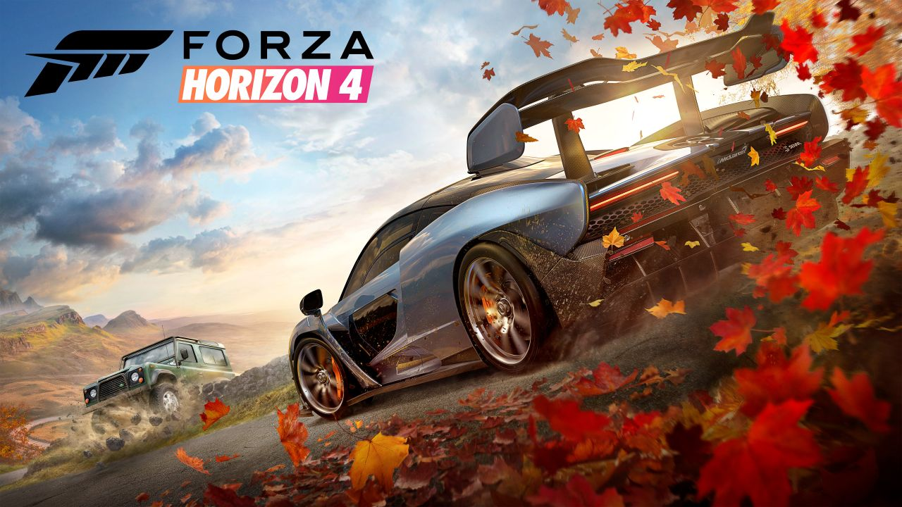

FORZA HORIZON 4
hace gala de su nuevo mapa con las temporadas del año.
Jon Knoles, director de diseño de PlayGround Games para el desarrollo de Forza Horizon 4, ha compartido unas nuevas declaraciones sobre cómo fue el proceso de elección de Reino Unido para ambientar la nueva y ambiciosa entrega de la saga.
Así, la primera idea en mente del ya nuevo estudio de Microsoft era buscar un lugar donde el cambio entre las cuatro estaciones del año pudiera encajar bien para el funcionamiento de un videojuego de conducción. En ese proceso miraron varias ubicaciones, incluidas Japón si bien añaden que los rumores surgidos hacia tal país los desconoce, para finalmente escoger el país británico por su variedad geográfica. "Formaciones rocosas antiguas, más recientes, otras más extrañas... Hay un par de formaciones [el gélido cerro de Rosemary Topping y el pico de Arthur's Seat] ideales para descender con ellas con tu coche", explicaba Knoles.
El creativo también mencionó en las declaraciones recogidas por DualShockers lo sensacional de poder recrear una ciudad histórica como Edimburgo. Igualmente, expuso que Forza Horizon 4 cubrirá partes del territorio de Galés, Escocia e Inglaterra. Knoles también expuso que las famosas paredes de piedra seca de la campiña inglesa, hechas durante siglos para delimitar propiedades, podrán ser destructibles en su mayoría.
Por último el director de diseño explicó que la duración de cada estación dependerá de la parte de la partida en la que se encuentre. "Con cada una de ellas los jugadores recibirán nuevos eventos para completar, con desafíos, recompensas, y contenidos de Forzathon adicionales. No habrá dos inviernos iguales, y todos experimentarán estas cosas de forma conjunta", comentaba Jon Knoles.
FORZA HORIZON 4 llegará a PC y Xbox One el 2 de octubre.